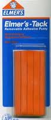
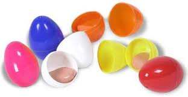

How To Make X-Tra Sticky Sticky Tack!
Article by J.
Once, while I was filming, I was goofing off and made a very absent-minded mistake. This was the result. This new mutant sticky tack can stretch and stick much better than plain ol' sticky tack. And now YOU can make it, by following these simple instructions!
First, take a stick of Elmer's Tack.
Roll it into a ball.
Now, take a ball of silly putty. Any color will do.
Now, put them both in your hand and fuse them together by rolling them. Be thorough, and really work it. Roll until the colors are completely mixed. The resulting goo in your hand should both stretch and stick better than your old sticky tack. The difference is DEFINITELY noticeable!